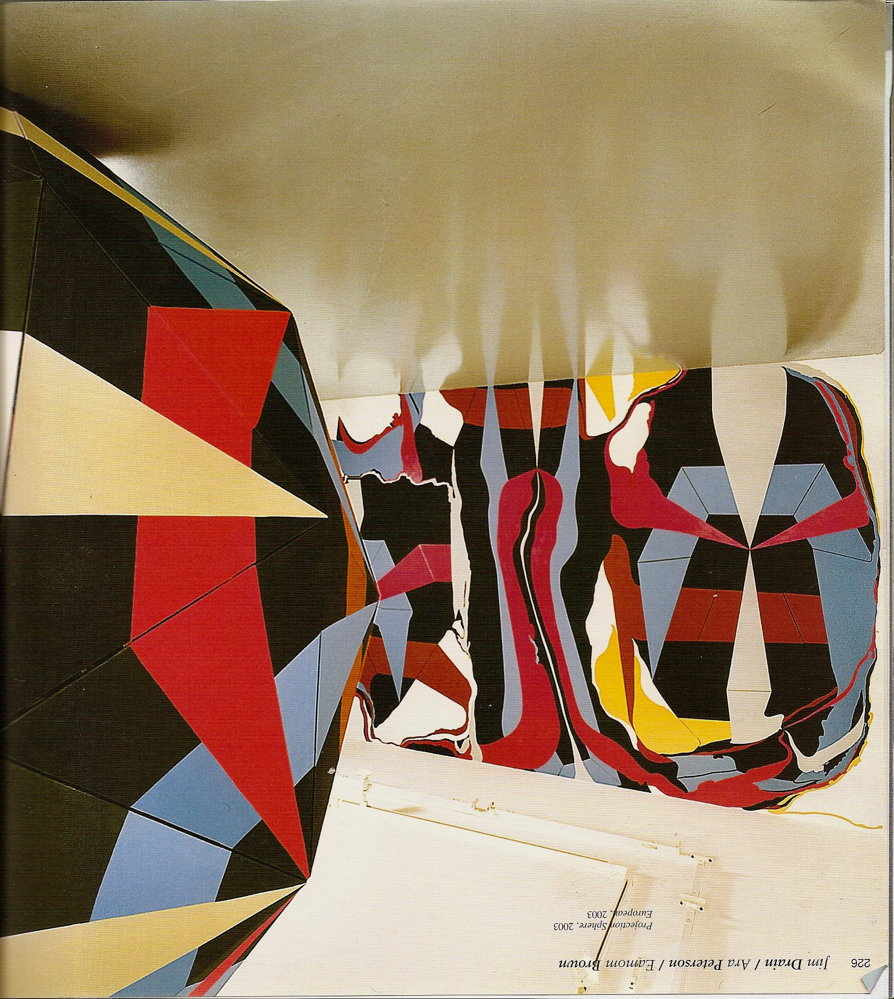
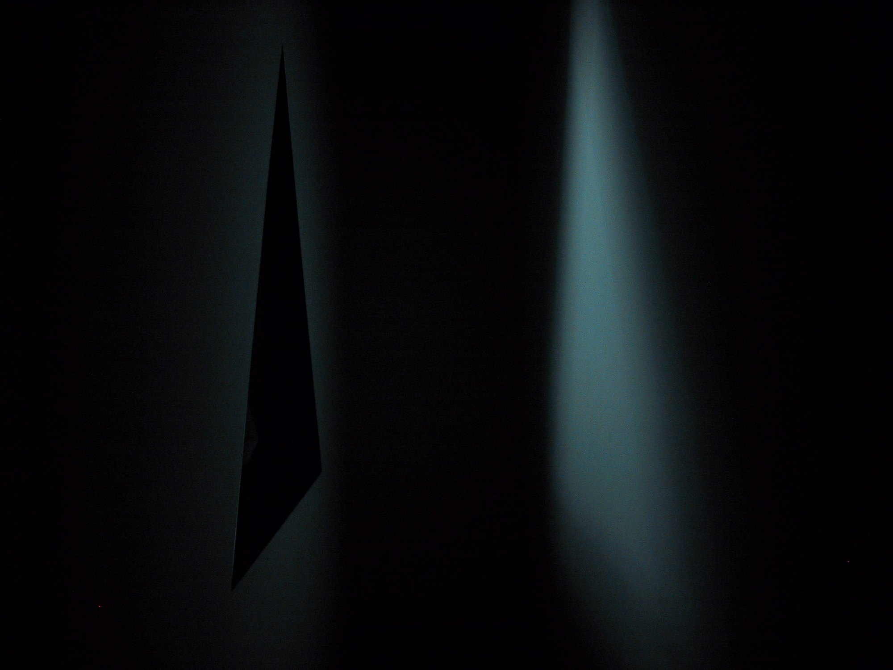
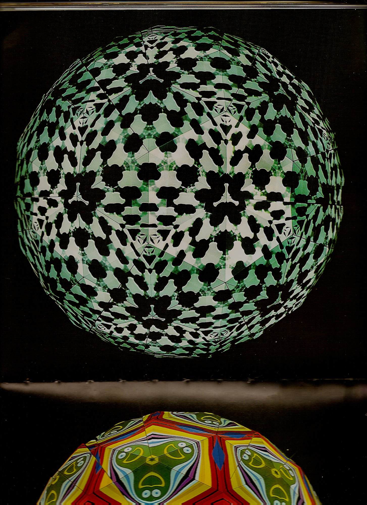

Earlier work
Lyon Biennale
Collaborative installation with Jim Drain and Ara Peterson for the 7th Lyon Biennale, C’est arrivé demain, September 17, 2003 – January 4, 2004: a geodesic sphere, a wall mural and a giant video kaleidoscope.




